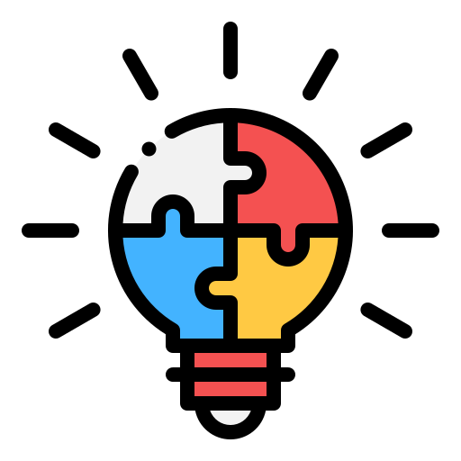
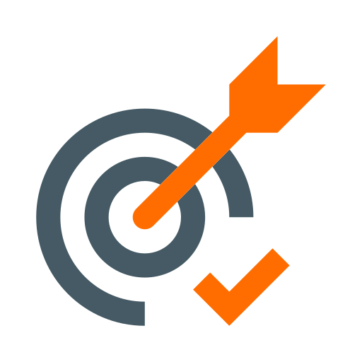
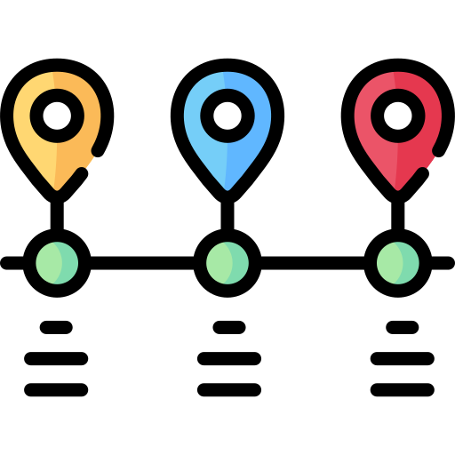

你的名字｜PM Leader × Lean × Data
把 TPS 思維轉譯為可落地的數位方法，打造「能持續運作」的導入體系。
Email
you@example.com
LinkedIn
linkedin.com/in/your-id
GitHub
github.com/your-id
可放置頭像
重點入口
現職工作內容
工作範疇、責任、使用工具與價值主張。
技能
能力矩陣、技能分類與標籤。
成就亮點
代表性專案、里程碑與互動圖表。
職涯時間軸
從 0 → 1 的歷程、重要里程碑。
現職工作內容
技能
成就亮點
職涯時間軸
現職工作內容
工作範疇
主要責任
使用工具 / 方法
價值主張
技能
成就亮點
角色：
技能：
關鍵字
重置
沒有符合篩選的成就。
技能分佈
角色占比
提示
點擊上方的角色/技能標籤或輸入關鍵字，會即時篩選下方清單與圖表。
備註
僅「重點入口」卡的圖示放大；Tabs 與區塊標題維持 18px。
職涯時間軸
 現職工作內容重點入口現職工作內容現職工作內容
現職工作內容重點入口現職工作內容現職工作內容